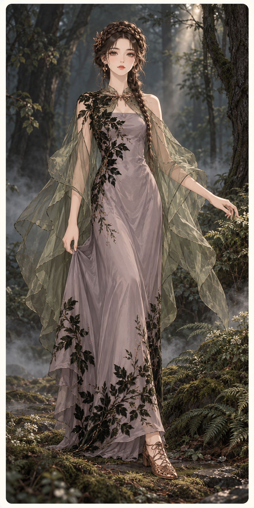
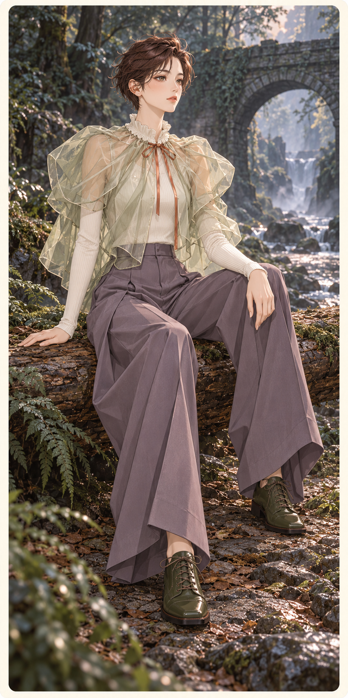
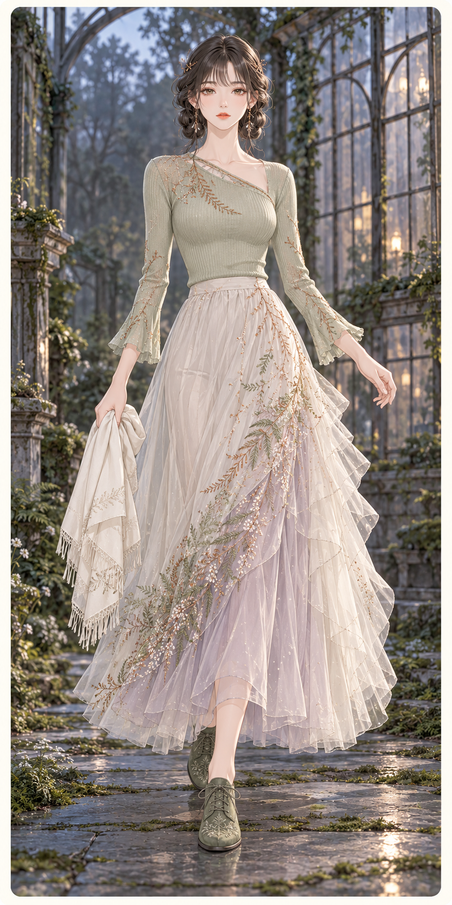

S07-F01苔影回声
Echoes in Moss
研究：Rodarte
2024 秋冬
全身构图；后脚大部被长裙遮住。植物贴花与披纱同属林雾气氛。
逐件品牌参考与改造
丝质长裙与植物绒花Rodarte
参考贴体长线、薄透与绒面植物对照；重画苔枝分布和烟紫色。
叶状欧根纱悬袖Rodarte
由宽幅透明披层转成分离悬袖，重设肩部连接。
铜色低跟鞋、发梳与编发原创搭配
自定植物金属轮廓，不复制品牌花饰。

S07-F02落叶的体积
The Volume of Fallen Leaves
研究：Simone Rocha
2024 春夏
已核查服装层次、发型与组内气氛；实际姿态以成图为准。
逐件品牌参考与改造
细针织与深褶阔裤原创搭配
用实布和纵向裤褶平衡透层，不重复蓬裙。
铜色闭合带、耳饰与方头鞋原创搭配
颈带实际闭合斗篷，其余配件自定。

S07-F03露水的针脚
Stitches of Dew
研究：Needle & Thread
Floral-embroidered Dress 产品研究
已核查服装层次、发型与组内气氛；实际姿态以成图为准。
逐件品牌参考与改造
斜领针织与可折披巾原创搭配
将连衣裙拆成上下装，强化偏侧重量。
低位编环、铜发针与平底系带鞋原创搭配
用细金属与发型回应露水和枝脉。